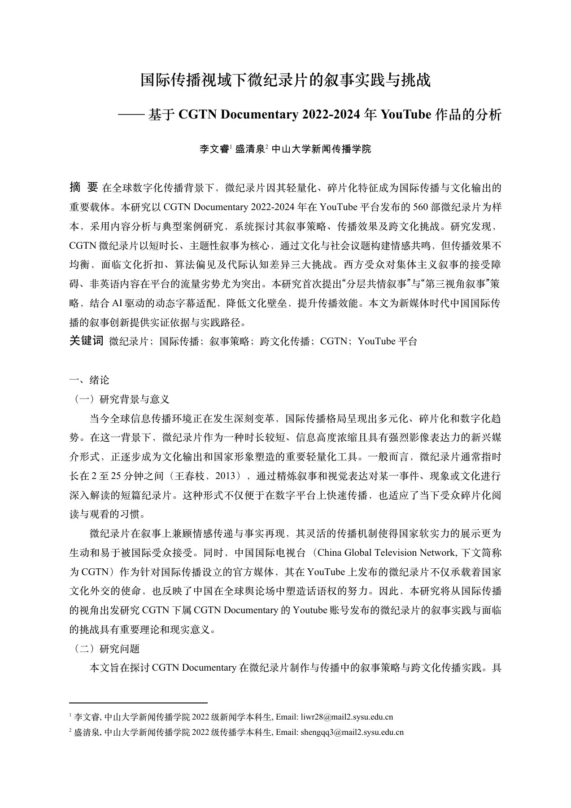

结构化内容分析
研究按主题、时长、发布频率、观看与点赞整理 560 部作品，方法段记录关键词提取和主题分析。
02 / ANALYSIS / 论文
省级大学生创新创业训练计划 · 项目负责人 · 2023.12–2025.05
MY ROLE
作为省级大学生创新创业训练计划项目负责人，我围绕 560 部微纪录片组织内容与传播表现分析，参与论文撰写，将数据观察转化为跨文化内容策略建议。论文入选 2025 年清华大学新闻传播学博士生学术论坛国际传播分论坛，我在论坛中进行口头报告，向学术同行介绍研究问题、方法与发现。
OVERVIEW
以 CGTN Documentary 在 YouTube 发布的 560 部微纪录片为样本，结合主题分类、传播数据描述统计和前十高播放作品编码，分析内容结构与跨文化表达。研究观察到播放与互动分布不均，并据此提出叙事分层、语境化字幕和系列内容策划建议，展示从内容数据到策略判断的研究过程。
CAPABILITY IN PRACTICE
研究按主题、时长、发布频率、观看与点赞整理 560 部作品，方法段记录关键词提取和主题分析。
研究比较分布与月度表现，并对高播放作品进行叙事、视觉、文化和语言维度的编码。
论文从观察中提出字幕语境化、系列化及跨平台表达建议，将数据分析转为内容判断。
RESEARCH RECOGNITION
论文入选 2025 年清华大学新闻传播学博士生学术论坛·青年学者论坛国际传播分论坛，并在清华大学新闻与传播学院进行口头报告。将书面研究转化为清晰的现场表达，也是这项研究的重要成果。
查看参会证明READ THE COMPLETE WORK
下方展示完整作品，可连续翻页或跳到任意一页。

点击页面可放大查看。阅读器聚焦后可用左右方向键翻页。